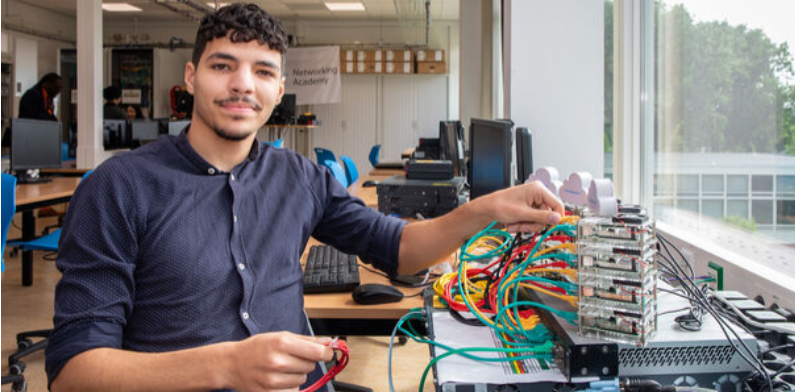

Van de smartphone in je hand tot de laptop voor je neus. Van online je sneakers bestellen tot online betalen. Een leven zonder computers en internet is echt ondenkbaar. Voor jou én voor bedrijven. In de branche van IT & Online maken vakmensen je dag een stuk makkelijker. Sterker nog: de wereld ligt aan je voeten.
IT & Online
